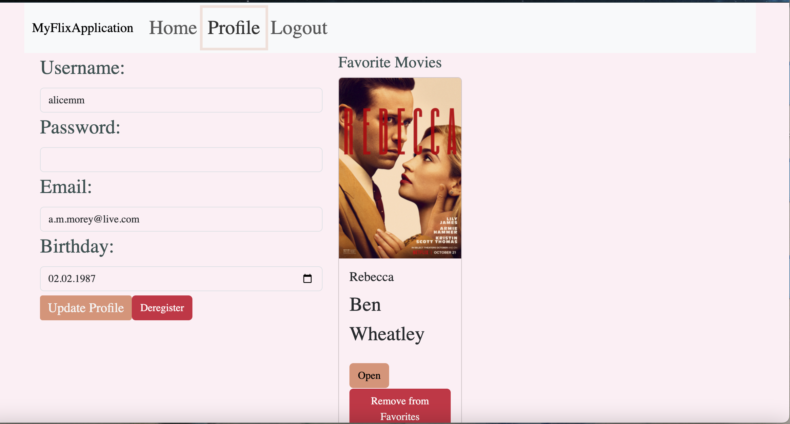

MyFlix React Project Description
MyFlix is a client-side application that allows users to view a list of movies, they can log in to access detailed information about each movie, including, genre, director and description. They can also curate a list of favourite movies, update their profile and deregister.
With this app , I developed a knowledge of using modern JavaScript frameworks like React and Redux to handle state interactions for movie filtering. I was able to integrate data from my movie API which helped me practice how to handle data in applications.
Links
- React: This web app is built using React, a popular Javascript library for building user interfaces.
- Redux: allowed movie filtering , when a user searches or filters for a specific movie, Redux stores the results in the state, ensuring the UI reflects this.
- Bootstrap: used as a UI library for styling and responsiveness.
- Parcel: a built tool for the app, bundling, transpiring and code optimisation
Project Technology

